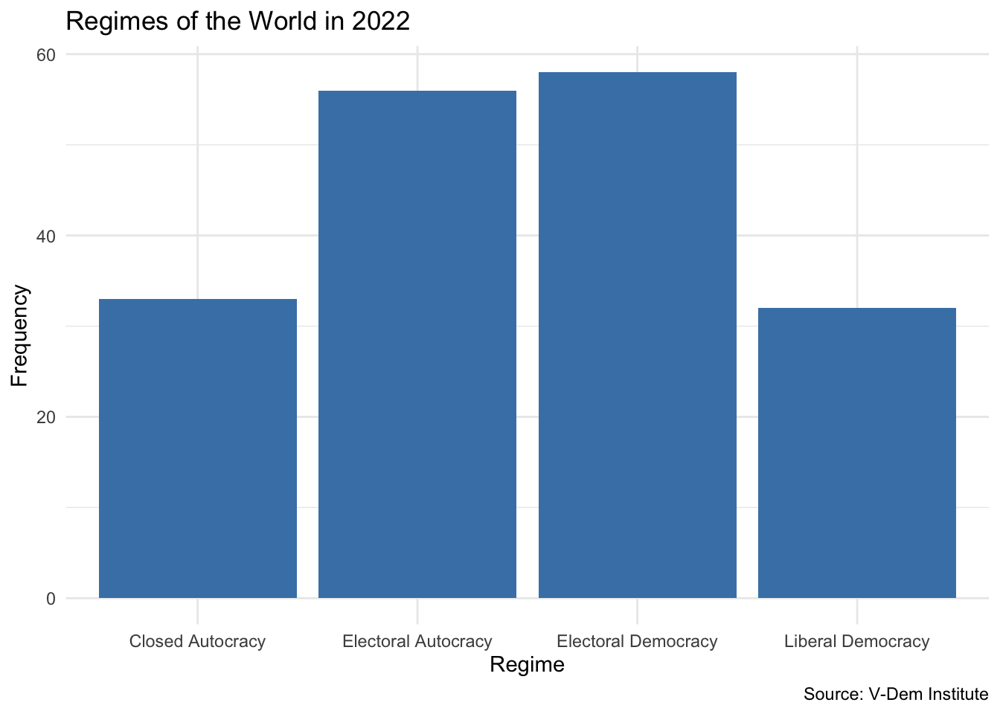
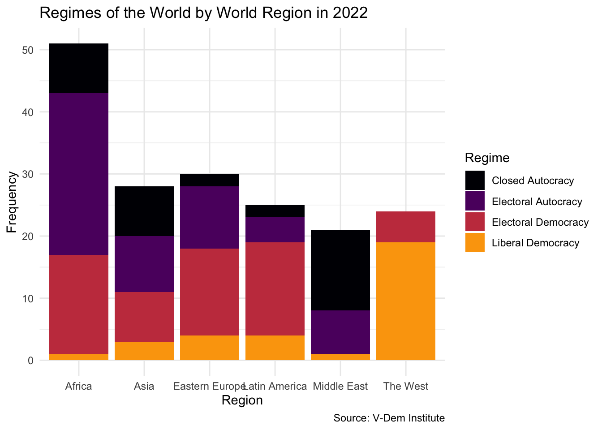
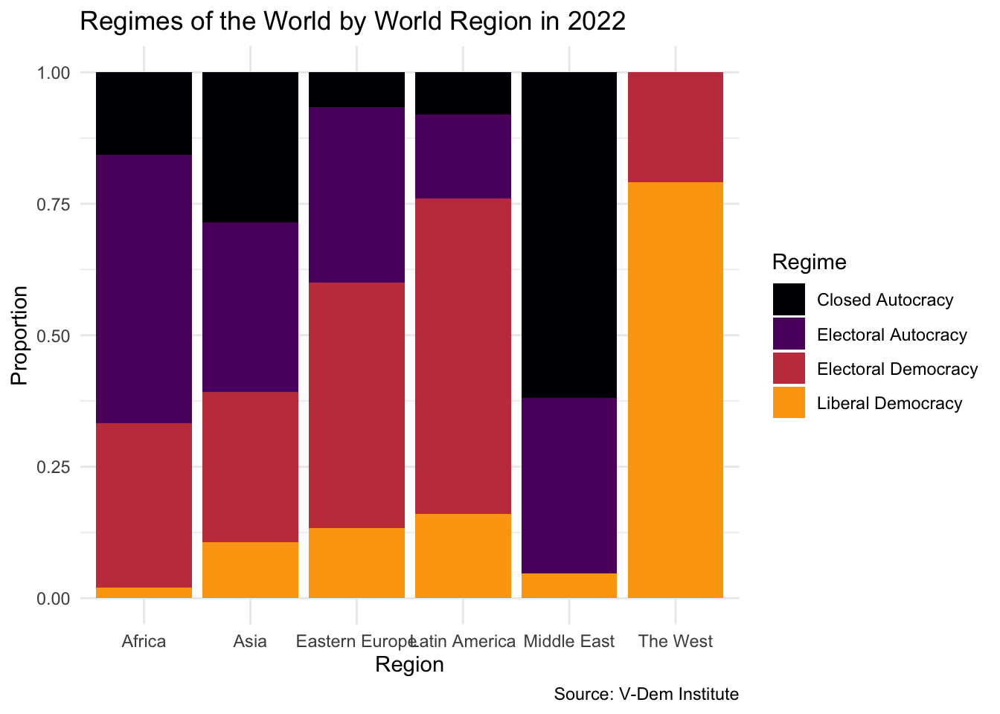

library(tidyverse)
library(vdemdata)
vdem2022 <- vdem |>
filter(year == 2022) |>
select(
country = country_name,
regime = v2x_regime,
region = e_regionpol_6C
) |>
mutate(
region = case_match(region, # replace the values in region with country names
1 ~ "Eastern Europe",
2 ~ "Latin America",
3 ~ "Middle East",
4 ~ "Africa",
5 ~ "The West",
6 ~ "Asia")
) |>
mutate(regime = case_match(regime,
0 ~ "Closed Autocracy",
1 ~ "Electoral Autocracy",
2 ~ "Electoral Democracy",
3 ~ "Liberal Democracy")
)Categorical Data
Thinking About Data
What are some ways we can classify data? 😎 💭
. . .
- anecdotal vs. representative
- census vs. sample
- observational vs. experimental
- categorical vs. numerical
- discrete vs. continuous
- cross-sectional vs. time series
- longitudinal vs. panel
- unstructured vs. structured
What are some ways we can classify data? 😎 💭
- anecdotal vs. representative
- census vs. sample
- observational vs. experimental
- categorical vs. numerical
- discrete vs. continuous
- cross-sectional vs. time series
- longitudinal vs. panel
- unstructured vs. structured
Variable Types
- Categorical
- Binary - two categories
- Nominal - multiple unordered categories
- Ordinal - multiple ordered categories
- Numerical
- Continuous - fractional values (measurement data)
- Discrete - non-negative whole numbers (count data)
What types of variables are these? 🤔
- Is a country a democracy? (yes/no)
- Polity (-10 to 10 in 1 unit increments)
- V-Dem Polyarchy (0-1 in 0.01 increments)
- V-Dem Regimes of the World Measure
- closed autocracy | electoral autocracy | electoral democracy | democracy
- Number of protest events
- Protest types (sit in, march, strike, etc.)
Categorical Data
V-Dem Regimes of the World Measure
- Closed Autocracy
- Electoral Autocracy
- Electoral Democracy
- Liberal Democracy
Data Setup
Examine the Data
glimpse(vdem2022)Rows: 179
Columns: 3
$ country <chr> "Mexico", "Suriname", "Sweden", "Switzerland", "Ghana", "South…
$ regime <chr> "Electoral Democracy", "Electoral Democracy", "Liberal Democra…
$ region <chr> "Latin America", "Latin America", "The West", "The West", "Afr…Let’s count the number of regimes by type…
vdem2022 |>
count(regime) regime n
1 Closed Autocracy 33
2 Electoral Autocracy 56
3 Electoral Democracy 58
4 Liberal Democracy 32Now let’s visualize the distribution of regimes with a bar plot…

Now let’s visualize the distribution of regimes with a bar plot…
vdem2022 |>
ggplot(aes(x = regime)) +
geom_bar(fill = "steelblue") +
labs(
x = "Regime",
y = "Frequency",
title = "Regimes of the World in 2022",
caption = "Source: V-Dem Institute"
) +
theme_minimal()Now let’s visualize the distribution of regimes with a bar plot…
More about geom_bar()
geom_bar()is different fromgeom_col()- Used to create bar plots where the height of the bar represents counts or frequencies of categorical variable
- By default, geom_bar() counts the number of occurrences of each category or group and plots it as the height of the bar
- Like
geom_histogram(),geom_bar()only requires the x aesthetic (y is automatically calcualted for you)
Your Turn!
- Expore the distribution of regimes for a different year
- Preprocess your data to include only the year you are interested in
- Visualize the distribution of regimes using
geom_bar() - Use the
labs()function to change title - What is different about the year that you chose relative to 2022?
05:00
How do Regimes Vary by Region?

How do Regimes Vary by Region?
vdem2022 |>
ggplot(aes(x = region, fill = regime)) +
geom_bar() +
theme_minimal() +
labs(
x = "Region",
y = "Frequency",
title = "Regimes of the World by World Region in 2022",
caption = "Source: V-Dem Institute",
fill = "Regime"
) +
scale_fill_viridis_d(option = "inferno", end = .8)How do Regimes Vary by Region?
What Did We Just Do?
- We used
geom_bar()to visualize the distribution of regimes by region - Essentially, we used two categorical variables to create a bar plot
- Regime type is…
- …an ordered categorical variable
- Region is…
- …a nominal categorical variable
Some regions have more countries than others. Why does this create an issue for telling a story with our data here?

Show Proportions Instead

We use position = "fill" to normalize the data and make the plot more interpretable…
vdem2022 %>%
ggplot(., aes(x = region, fill = regime)) +
geom_bar(position = "fill") +
theme_minimal() +
labs(
x = "Region",
y = "Proportion",
title = "Regimes of the World by World Region in 2022",
caption = "Source: V-Dem Institute",
fill = "Regime"
) +
scale_fill_viridis_d(option = "inferno", end = .8)Your Turn!
- Explore the distribution of regimes by region for a different year
- Preprocess your data to include only the year you are interested in
- Visualize the distribution of regimes using
geom_bar()andposition = "fill" - Use the
labs()function to change title - What is different about the year that you chose relative to 2022?
05:00